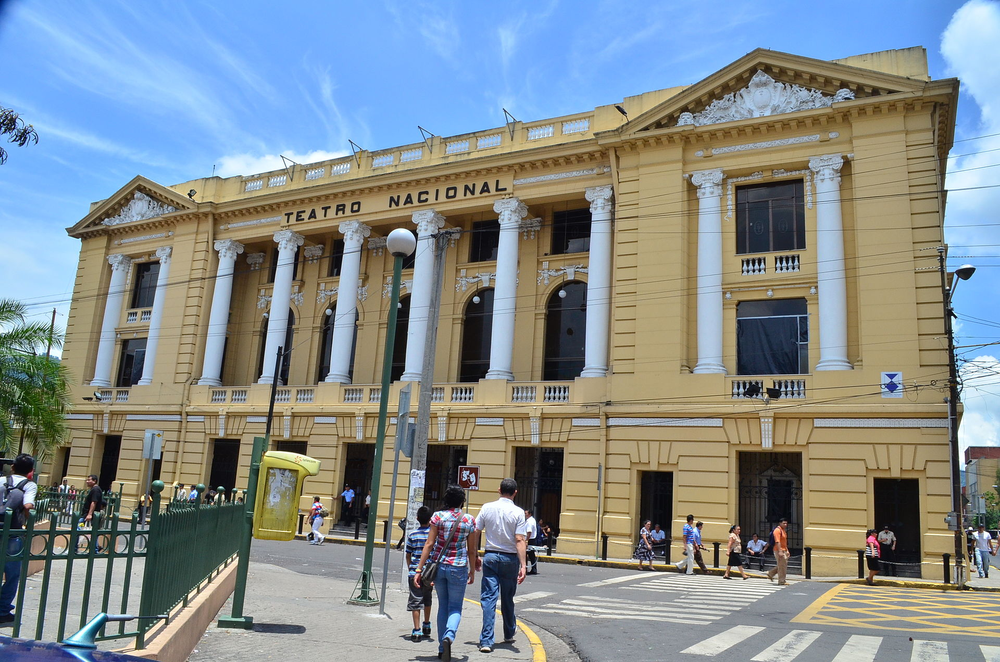

La actual edificación suplantó al antiguo Teatro Nacional que resultó destruido por un incendio en la noche del 17 de febrero de 1910.
Con el pasar de los años, este lugar ha recibido otras dos remodelaciones importantes: durante 1975 a 1976 y la más reciente en 2004 a 2007 para abrir las puertas al público en 2008.
Esta importante edificación ha sido escenario de óperas italianas, zarzuelas, dramas, conferencias científicas, conciertos de caridad y filmes cinematográficos importantes.
Curiosidades
Curiosidad 1
Curiosidad 1
1. Tiene capacidad para 650 asientos. Posee palcos de tres niveles, de los cuales destaca el Palco Presidencial en la segunda elevación.
Curiosidad 2
Curiosidad 2
2.Tiene una cúpula elipsoidal que contiene un mural del pintor Carlos Cañas y una llamativa lámpara de cristal.
Curiosidad 3
Curiosidad 3
3.El acto de inauguración fue celebrado a las 10 a.m. en el Gran Foyer, presidido por el presidente de la república Manuel Enrique Araujo con participación del gabinete de estado, miembros del poder legislativo y judicial, y el cuerpo diplomático y consular.